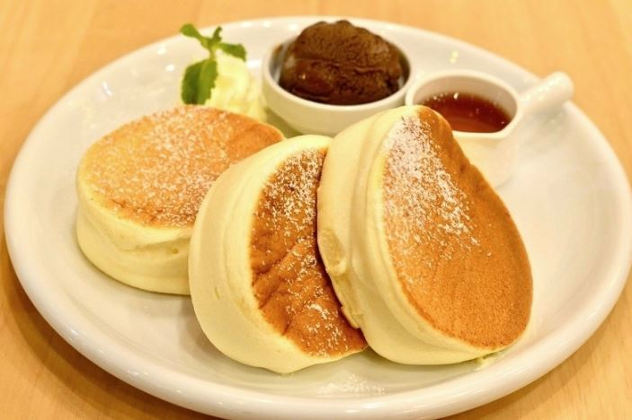

RECETA DE HOTCAKES

Ingredientes:
2 Huevos
32 gramos Harina de trigo (1/4 taza)
16 gramos Azúcar (1/8 taza)
20 ml Leche
1 cucharadita Polvo para hornear (levadura química)
1 cucharadita Vainilla
Para acompañar: Miel de maple, fresas ó banano
1._Separa las claras de las yemas. Al separar las claras de las yemas, hazlo con cuidado para no reventar la yema y que los residuos caigan en las claras. Otro punto muy importante es la limpieza del recipiente donde vas a poner las claras. Estos dos aspectos son básicos para que, al batir las claras más adelante, éstas lleguen al punto de nieve.
2._Agrega la leche al recipiente donde tienes las yemas de huevo, mezcla muy bien estos ingredientes e inmediatamente mezcla la cucharadita de vainilla. Mezcla todo hasta integrarlo perfectamente.
3._A la mezcla anterior, vas a agregar la harina de trigo y una cucharadita de polvo de hornear, cerniéndolas con ayuda de un colador o cernidor, por favor no omitas este paso. Mezcla bien todos los ingredientes.
4._Ahora vamos a batir las claras a punto de nieve. Inicia a batir agregando una pizca de sal a las claras y gradualmente durante el batido, agregas el azúcar hasta que las claras formen unos picos en las varillas del batidor o que, al dar vueltas al recipiente, las claras no se caigan y queden firmes.
5._Ahora vas a agregar la mezcla de las yemas y la harina, a las claras a punto de nieve. Debes hacerlo por partes y haciendo movimientos envolventes, sin romper el aire que tienen las claras, ya que éstas le darán el efecto esponjoso que queremos.
6._Vas a empezar a poner la mezcla de los pancakes en la sartén previamente calentada a fuego bajo. Luego de poner 2 pancakes en la sartén, tápalas y deja por 5 minutos a fuego bajo (debe ser bajo para no quemarlas). Luego das vueltas y repites el proceso por otros 5 minutos.
¡Y listo! Así de fácil hemos hechos estos deliciosos pancakes Japoneses Esponjosos. Sirve con fresas y bananos picados y miel de maple al gusto.
VIDEO